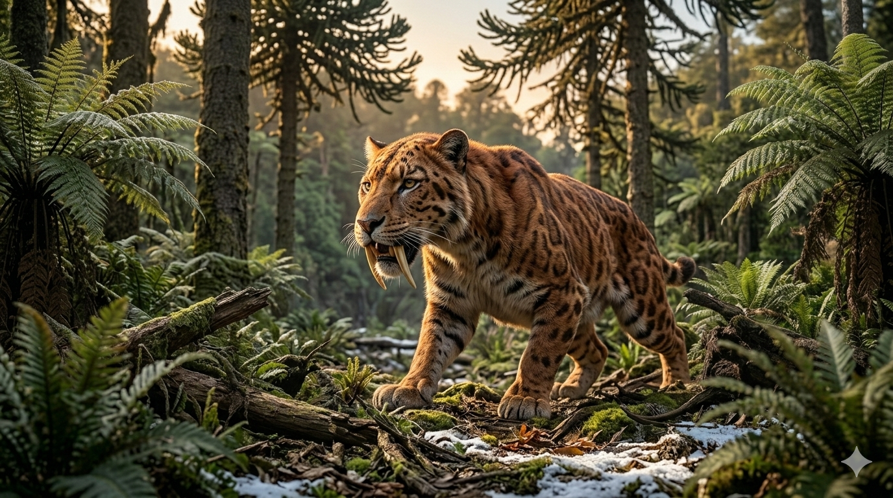

סמילודון
The Saber-Toothed Titan: Smilodon populator

תיק מחקר: נתונים פיזיולוגיים
תקופת פעילות
2.5 מיליון עד 10,000 שנה
עידן הפליסטוקן (עידן הקרח)
מסה גופנית (משקל)
350 עד 440 קילוגרם
כבד משמעותית מאריה מודרני
אורך הניבים
עד 28 סנטימטרים
ניבים עליונים דמויי חרב שטוחה
תזונה
טורף-על של מגה-פאונה
ביזונים, ממותות צעירות, עצלני קרקע ענקיים וסוסים קדומים.
סיווג טקסונומי קריטי
חתול משונן (Machairodontinae)
שושלת נפרדת מהחתולים המודרניים. אינו נמר ואינו אריה – הוא יצור ייחודי שנכחד לחלוטין.
01 // ניתוח אטימולוגי נרחב
| החלק בשם | שפת מקור | פירוש ומשמעות היסטורית |
|---|---|---|
| Smilo- | יוונית (σμίλη) | סכין גילוף / איזמל / להב התייחסות לצורה השטוחה והחדה של הניבים, המזכירים כלי עבודה לחיתוך עמוק. |
| -odon | יוונית (ὀδών) | שן (Tooth) הלחם מלא של השם: **"שן הלהב"** או **"שן האיזמל"**. שם המדגיש את כלי הנשק העיקרי של הטורף. |
02 // תולדות הגילוי: מהמערות לבורות הזפת
הגילוי הראשון בברזיל (1842)
הפלאונטולוג הדני **פיטר וילהלם לונד**, המכונה "אבי הפלאונטולוגיה הברזילאית", הקדיש את חייו לחקירת מערות באזור **לאגואה סנטה** שבברזיל. לונד חיפש עדויות לחיות ענק שנכחדו בדרום אמריקה כדי להבין את הקשר בין מאובנים למינים חיים. בתוך מערות גיר חשוכות, לונד מצא עצמות גולגולת עם ניבים שבורים אך עצומים. הוא זיהה מיד שמדובר בטורף חתולי מסוג חדש לחלוטין. הוא קרא לו סמילודון ופרסם את ממצאיו ב-1842, מה שהכה גלים בקהילה המדעית האירופית.
מלכודת המוות בלה-בראה
הגילוי המסיבי ביותר התרחש בקליפורניה, באתר **"בורות הזפת של לה-בראה"**. הזפת הטבעית שעלתה מהאדמה פעלה כ"מלכודת מוות" דביקה. חיות צמחוניות נתקעו בזפת, והסמילודונים שבאו לטרוף אותן נתקעו גם הם. בתחילת המאה ה-20, חוקרים חילצו מהזפת למעלה מ-**2,000 שלדים** של סמילודון. זהו האוסף הגדול והשלם ביותר בעולם, המאפשר למדענים לחקור לא רק פרטים בודדים אלא אוכלוסיות שלמות.
אקולוגיה: אידיאולוגיית העזרה ההדדית
אחד הגילויים המרתקים ביותר נוגע למבנה החברתי של הסמילודון. בניגוד לחתולים בודדים, הממצאים מצביעים על כך שהסמילודון חי בלהקות עם מבנה חברתי מורכב.
הוכחת הטיפול בפצועים
מאובני לה-בראה חשפו מאות שלדי סמילודון עם פציעות קשות – חוליות שבורות ואגנים מרוסקים – ש**הבריאו**. בטבע, חתול בודד עם פציעה כזו היה גווע ברעב. העובדה שהם שרדו שנים לאחר הפציעה מוכיחה שחברי הלהקה דאגו להם, הביאו להם מזון והגנו עליהם.
שיטות הציד והביומכניקה
- 1 זווית פתיחת פה: הלסת נפתחה ל-120 מעלות (בניגוד ל-65 אצל חתולים מודרניים) כדי לאפשר שימוש בניבים הארוכים.
- 2 כוח פיזי: זרועותיו הקדמיות היו חזקות פי כמה מכל חתול חי, מה שאיפשר לו להצמיד טרף ענק לאדמה ללא תזוזה.
- 3 נשיכת חסד: הניבים שימשו לחיתוך עמוק של כלי דם בצוואר לאחר שיתוק הטרף בכוח גופו.
03 // תעלומת המשפחה: הזכר, הנקבה והגורים
ממצאים בבור 91
מעולם לא מצאו "צילום מצב" של אבא, אמא וגור קפואים בזמן בלוח אחד, אך בתוך בורות מסוימים בלה-בראה נמצאו שרידים של מספר פרטים באותה נקודה בדיוק. נמצאו גולגולות של בוגרים לצד עצמות של גורים ומתבגרים. המדענים הסיקו מכך שהגורים לא הסתובבו לבד; הם היו חלק מלהקה שהגיעה לאתר הציד יחד תחת הגנת המבוגרים.
שוויון זוויגי (Sexual Dimorphism)
כאן נמצא האתגר המדעי הגדול. בניגוד לאריות מודרניים עם רעמה, אצל הסמילודון אין כמעט דו-צורתיות זוויגית בולטת בעצמות. הזכרים והנקבות היו כמעט באותו גודל ובעלי ניבים דומים. בגלל שוויון זה, לא ניתן לקבוע בוודאות אם קבוצה שנמצאה היא "זכר ונקבה" או שתי נקבות שגידלו גורים יחד, אך הדינמיקה הקבוצתית ברורה.
גדילת הגורים והתפתחות הניבים
הגורים נולדו ללא הניבים הארוכים. ניבי החרב הקבועים החלו לצמוח רק בגיל שנתיים והגיעו לאורכם המלא רק בסביבות גיל 3-4. העובדה שמעט גורים נתקעו בזפת מעידה על כך שהבוגרים שמרו עליהם הרחק מהסכנה. זה מוכיח שהגורים היו תלויים ב"משפחה" לצורך הזנה במשך תקופה ארוכה מאוד.
שלמות המאובנים
בזכות בורות הזפת, נמצאו שלדים **שלמים ב-100%**, כולל עצמות הלשון (Hyoid) המעידות על יכולת שאגה כשל אריה. חוקרים אף הצליחו לחלץ שברי DNA וחלבוני קולגן מהעצמות השמורות בזפת, מה שמאפשר להבין את הקשר הגנטי שלו למשפחת החתוליים המודרנית.
סיבת ההכחדה
הסמילודון נעלם לפני כ-10,000 שנה בעקבות קריסת המגה-פאונה (היעלמות הטרף הגדול והאיטי) בסוף עידן הקרח. הגעתם של בני האדם הראשונים ("תרבות קלוביס") יצרה תחרות קשה על הציד וייתכן שגם ציד ישיר, מה שהוביל למכה הסופית לשושלת המפוארת.